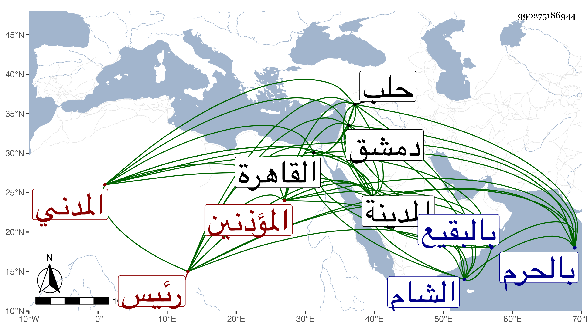

0902Sakhawi.DawLamic.ITO20230111-ara1.EIS1600.990275186944
Biography ID: 990275186944
531
أحمد بن محمد بن محمد بن محمد الشهاب أبو العباس وأبو الرضي بن الشمس المدني رئيس المؤذنين بالحرم النبوي كأبيه ويعرف قديما بابن الخطيب ثم بابن الريس وهو والد الشمس محمد وإبراهيم بن عبد الله المذكورين . سمع بالمدينة سنة أربع وثلاثين على الجمال الكازروني وفي سنة تسع وأربعين على أبي السعادات ابن ظهيرة وقرأ على المحب المطري جملة وباشر حسبة بلده قليلا ، ودخل القاهرة والشام وغيرهما مرارا فسمع بدمشق من شيخنا المجلس الذي أملاه بجامعها وبحلب على حافظها البرهان ، وله نظم فيه المقبول رأيت بخطه منه جملة . ومات في يوم الثلاثاء سابع شعر صفر سنة أربع وخمسين بالمدينة النبوية ولم يكمل الخمسين ، ودفن بالبقيع رحمه الله ومن عنوان نظمه :
| يا من نزلوا نجدا وفيها حلوا | أنتم أملي |
| يا من جعلوا الجفا وبعدي حلوا | لموا شملي |
| وارثوا لمحبكم وهجري خلوا | واشفوا عللي |
| وامحوا زللي فالجسم | بلي |
